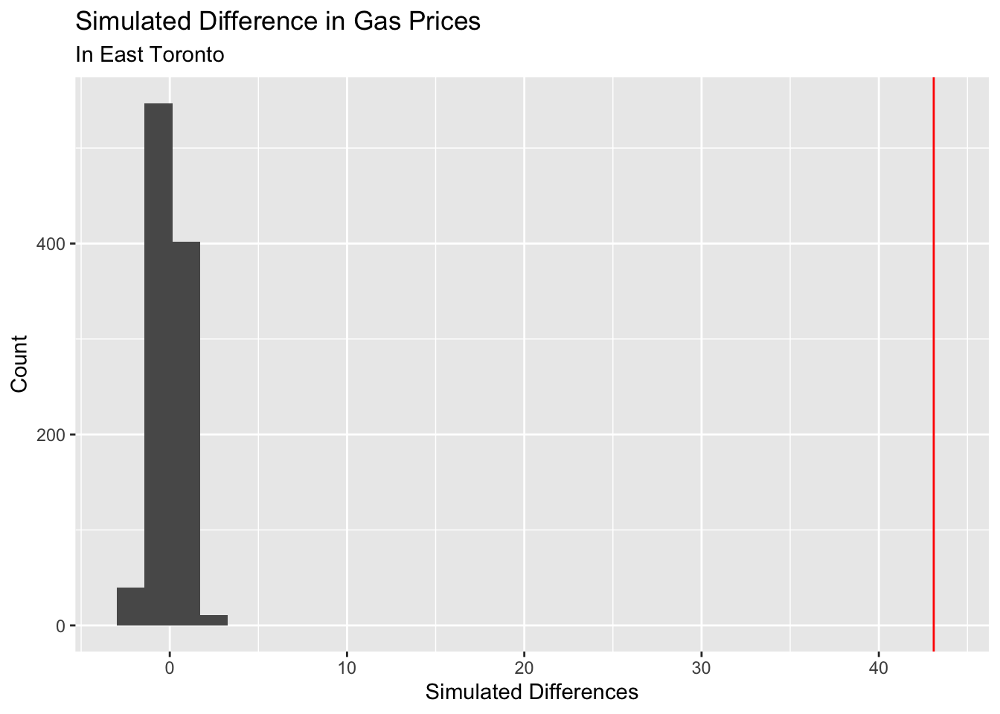

#initial data cleaning
ontario_gas <- read_csv("~/Desktop/SDSProjects/maryw-1.github.io/Ontario_Fuel_Prices_1990_2023.csv") |>
select(Date, `Toronto West/Ouest`, `Toronto East/Est`) |>
rename(`east_toronto` = `Toronto East/Est`, `date` = `Date`) |>
mutate(date = year(ymd(date)),
pre_2010 = ifelse(date < 2010, "Yes", "No"),
east_toronto = as.numeric(east_toronto)) |>
select(-date) |>
drop_na() Mini Project: Simulations
Introduction
We are interested in seeing if gas prices changed over time. Since the worlds economy is ever changing, I thought it would be interesting to analyze gas prices. Living in the United States, we only hear about the outrages gas prices within the states; however, how are other countries dealing with such changes, if there are any to begin with. I was curious to see if the changing gas prices were that drastic as well. We begin by importing the Ontario gas prices dataset. I wanted to explore how gas prices vary within a two very different regions of the same city. Here, my analysis involves the difference of two means. So I tidied my dataset such that the column date was a binary variable, which took on the values of “yes” or “no”, representing if the observation year was pre_2010 or not.
After we created the ontario_gas dataset, let us make sure that we are able to grab the mean gas prices of pre_2010. Notice the output is a 2x2 tibble. It shows us the mean gas prices from the years of 1990 to 2009, and the mean gas prices from the years of 2010 to 2023.
ontario_gas |>
group_by(pre_2010) |>
summarise(mean_gas = mean(east_toronto))# A tibble: 2 × 2
pre_2010 mean_gas
<chr> <dbl>
1 No 106.
2 Yes 63.2From this output, it seems like before 2010, the mean gas price in east was around 63.2 Canadian dollars, and gas prices after 2010 was around 106 Canadian dollars.
Now that we verified that our new dataset works, let us create a function such that we are able to easily explore the different years and regions within Ontario. However, remember that in this simulation, we are only interested in the regions of West and East Toronto.
mean_ontario_gas <- function(gas_vec, year_vec) {
mean_tbl <-
ontario_gas |>
group_by({{year_vec}}) |>
summarise(mean_gas = mean({{gas_vec}}))
observed_diff <- mean_tbl[[2]][1] - mean_tbl[[2]][2]
}Note that the difference in means between the two time periods is 43.10 Canadian dollars. This indicates that after 2010, the gas prices in East Toronto is 43.10 Canadian dollars more expensive than gas prices before the years of 2010.
Now that we know the actual difference in gas prices, let us run a simulation to see if there is an actual difference in the mean prices between the two time periods. In addition, it will help us in assessing our model’s accuracy. Because real-world scenarios might not adhere to statistical assumptions or distributions, it is important to run statistical analysis to analyse to see if there is a statistical significance. Here, we are running our simulation 1000 times. Note that we need to shuffle the data to see if the results happen by chance, or if there is an actual relationship between the variables.
simulated_diffs1 <- vector("double", 1000)
for(i in 1:1000) {
mean_tbl <- ontario_gas |>
mutate(pre_2010 = sample(pre_2010)) |>
group_by(pre_2010) |>
summarise(mean_gas = mean(east_toronto))
simulated_diffs1[[i]] <- mean_tbl[[2]][1] - mean_tbl[[2]][2]
}Once we have the simulated differences, we need to plot out simulated data against our observed difference. Remember that our observed difference in the mean gas prices is 42.8 Canadian dollars. By plotting a histogram, we are able to compare our simulated data against our observed mean difference.
null_world <- tibble(simulated_diffs1 = simulated_diffs1)
ggplot(null_world, aes(x = simulated_diffs1)) +
geom_histogram() +
geom_vline(xintercept = mean_ontario_gas(east_toronto, pre_2010), color = "red") +
labs(title = "Simulated Difference in Gas Prices",
subtitle = "In East Toronto",
x = "Simulated Differences",
y = "Count")`stat_bin()` using `bins = 30`. Pick better value `binwidth`.
Note that we plotted the observed difference as the horizontal red line. The histogram represents the values we received when we ran our simulations. Notice how the red line is super far away from our simulated data. This indicates that there is significant evidence that there is a difference between the mean prices of gas prices between the two time periods (pre 2010 and post 2010).
Now that we ran our simulation and plotted it on a histogram, let us also perform a statistical test to see how accurate our simulation was. Note that because we are interested in the difference of two means, we have to run a t-test.
t_test_result <- t.test(ontario_gas$east_toronto ~ ontario_gas$pre_2010)
t_test_result
Welch Two Sample t-test
data: ontario_gas$east_toronto by ontario_gas$pre_2010
t = 57.486, df = 5829.3, p-value < 2.2e-16
alternative hypothesis: true difference in means between group No and group Yes is not equal to 0
95 percent confidence interval:
41.62830 44.56775
sample estimates:
mean in group No mean in group Yes
106.33840 63.24037 From our t-test, we have a p-value of 2.2e-16, which agrees with our results of our simulation. There is significant evidence that there is a difference in the true means of gas prices between the two time periods of post 2010 and pre 2010.
Conclusion
I was interested in seeing if the ever changing economy affects the prices of consumer goods; in particular, I was interested in seeing if there is a significant difference in the mean gas prices between the time periods of 1990-2019 and 2010-2023. In order to do this, we need to run simulation tests to confirm that the mean prices we observed is not happening by chance, and there is actual statistical evidence that shows the difference in gas prices. Through our analysis, we are able to see that there is a true difference in means between the years of 1990-2009 and 2010-2023. Note that I wrote the function such that we are able to compare any region within Ontario, Canada. The only difference and changes we need to make lies in the for loop function, where we need to specify the region that we are interested in analyzing; otherwise, we are able to analyze the different regions in Ontario quite easily.